DEV The Ultimate Guide to OpenUSD Pipeline Development
Overview
This guide is a companion resource for the OpenDisplayXR VDD and Kartaverse "KartaVP" open-source immersive content production pipeline projects.
This document explains how to approach Pixar OpenUSD asset-based best practices, and how to use those concepts to help drive large-scale nVP (Neural Virtual Production) workflows in an efficient and performant fashion.
Part 1 - Compiling your own OpenUSD Plugins¶
Note
For this post, CentOS 7.x and the YUM package manager are going to be used for all the BASH CLI (command-line) shell examples.
Compiling USD from source is the first step a TD needs to start with on the long journey towards being able to use the Fusion SDK C++ files to try and create USDC (Binary Crate)/USDA (ASCII) centric USDMesh3D and USDExporter nodes that would run inside of Fusion v16.
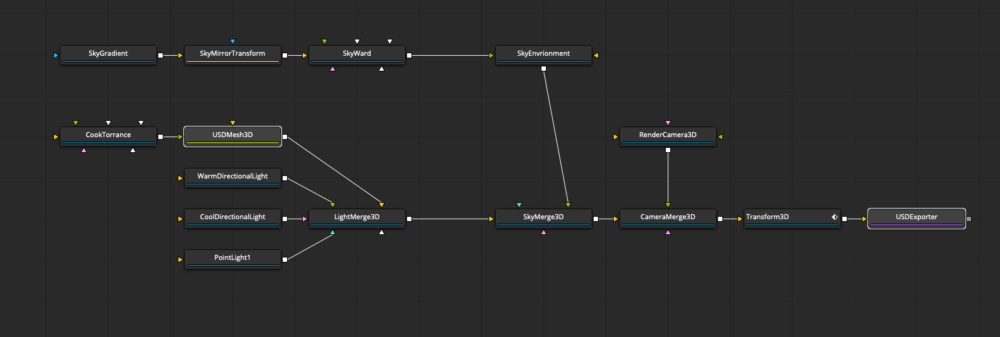
It's USD Compile Time!¶
Before we do any compiling we need to clone a copy of the PIXAR OpenUSD GitHub repo and save it in our $HOME/usd/ folder.
Step 1. "Gnome Desktop" based group install to compile OpenUSD¶
It helps to have a full "Gnome Desktop" based group install present on the system used to compile OpenUSD if you want to get going faster.
YumGroupInstall.bsh
sudo yum -y groupinstall "GNOME Desktop"
Note
Compiling USD on a headless computer, and running with a CentOS minimal install can be frustrating to set up as it is initially missing a lot of libraries needed to compile a functioning copy of usdview.
Step 2. Add supporting libs to your RedHat/CentOS¶
Add the required supporting libraries to your Redhat/CentOS distro using Yum:
YumInstallPackages.bsh
# YUM with devel files
sudo yum install -y \
alembic alembic-devel \
boost boost-devel boost-filesystem boost-system boost-thread \
bzip2 bzip2-devel \
cmake \
curl \
glew glew-devel \
glfw glfw-devel \
hdf5 hdf5-devel \
jemalloc jemalloc-devel \
libpng libpng-devel libtiff libtiff-devel \
OpenColorIO OpenColorIO-devel \
OpenEXR OpenEXR-devel \
OpenImageIO OpenImageIO-devel \
PyOpenGL \
python-devel python-jinja2 python-pip \
qt-devel \
tbb tbb-devel \
gcc \
doxygen graphviz
Step 3. Use PIP to add PySide for the PIXAR usdview's UI¶
Upgrade your copy of Python PIP. Then use PIP to add PySide which is required by the PIXAR usdview program's UI.
PIPupgrade.bsh
# PIP
sudo pip install --upgrade pip
sudo pip install pyside
Step 4. Environment variables for the supporting libs¶
To help simplify the OpenUSD compiling process, let's define a set of environment variables that tell the compiler where to find the supporting libraries needed.
This BASH shell example assumes you also want to compile a build of the OpenUSD plugins for Maya 2019, Katana v3.2, and RenderMan 22 on your system, and that you have the shipping version of Houdini installed.
AddEnvVars.bsh
# Add these as temporary env vars
{
export ALEMBIC_INCLUDE_DIR=/usr/include
export ALEMBIC_LIBRARIES=/usr/lib64/libAlembic.so
export ALEMBIC_LIBRARY_DIR=/usr/lib64
export BOOST_LIBRARYDIR=/usr/lib64
export DOXYGEN_EXECUTABLE=/usr/bin/doxygen
export DOT_EXECUTABLE=/usr/bin/dot
export EMBREE_LIBRARY=/usr/lib64
export EMBREE_INCLUDE_DIR=/usr/include
export OIIO_INCLUDE_DIR=/usr/include
export OIIO_LIBRARIES=/usr/lib64/libOpenImageIO.so
export OPENEXR_Half_LIBRARY=/usr/lib64/libHalf.so
export OPENEXR_INCLUDE_DIR=/usr/include
export OPENEXR_LIB=/usr/lib/
export OPENEXR_LIBRARY_DIR=/usr/lib
export OPENSUBDIV_INCLUDE_DIR=/usr/include
export PXR_BUILD_ALEMBIC_PLUGIN=TRUE
export PXR_ENABLE_PTEX_SUPPORT=FALSE
export PXR_MALLOC_LIBRARY=/usr/lib64/libjemalloc.so
export TBB_ROOT_DIR=/usr/include/
export DEVKIT_LOCATION=$HOME/devkitBase
export MAYA_LOCATION=/usr/autodesk/maya2019
export HOUDINI_ROOT=/opt/hfs17.5.229
export HOUDINI_BASE_DIR=/opt/hfs17.5.229
export HOUDINI_INCLUDE_DIRS=/opt/hfs17.5.229/toolkit/include
export HOUDINI_LIB_DIRS=/opt/hfs17.5.229/dsolib
export HOUDINI_VERSION=17.5.229
export KATANA_API_LOCATION=/opt/Katana3.2v1
export KATANA_API_INCLUDE_DIR=/opt/Katana3.2v1/plugin_apis/include
export KATANA_API_SOURCE_DIR=/opt/Katana3.2v1/plugin_apis/src
#export RENDERMAN_LOCATION=/opt/pixar/RenderManProServer-22.6
export RENDERMAN_LOCATION=$RMANTREE
export PXR_ENABLE_OSL_SUPPORT=FALSE
}
This snippet is handy if you want to print the active envrionment variables in your terminal session, and sort them alphabetically at the same time when you display the results:
ListEnvVars.bsh
env | sort
Note: We will leave the Houdini OpenUSD compiling process up to the makefiles that ship alongside of Houdini v17.5 or v18.
This is due to "Hython" dependency hell that can occur when you naively intermix an OpenUSD library compile (or add to the $PATH env variable) parts of Hython and your operating system's version of Python.
Below is a snippet of BASH terminal session output that documents what happens if you compiled and then added the PIXAR OpenUSD public repository's "raw" library files to your Houdini.env entry and started up Houdini.
Short Summary: You do need to use the Hython modified/custom patched version of the OpenUSD makefiles that come with Houdini's installer to avoid making Houdini unhappy...
Houdini.env
# USD for Houdini
HOUDINI_PATH=/opt/r_usd/third_party/houdini:&
HOUDINI_DSO_ERROR=1
#HOUDINI_DSO_PATH=@/plugin:/opt/r_usd/plugin:&
HOUDINI_DSO_PATH=@/plugin:&
HOUDINI_SCRIPT_PATH=@/scripts:/opt/r_usd/lib:&
HOUDINI_PYTHON_LIB=/usr/lib64/libpython2.7.so
[vfx@R01 ~]$ houdini
------------------------ 'houdini-bin' is dying
------------------------
houdini-bin crashed. FATAL ERROR: [TF_DEBUG_ENVIRONMENT_SYMBOL] multiple symbol definitions. This is usually due to software misconfiguration. Contact the build team for assistance. (duplicate 'TF_SCRIPT_MODULE_LOADER')
in _Add at line 96 of /home/prisms/builder-new/WeeklyDevToolsHEAD/dev_tools/src/usd/usd-19.01/USD/pxr/base/lib/tf/debug.cpp
The stack can be found in R01:/var/tmp/st_houdini-bin.12529
done.
------------------------------------------------------------------
Step 5. Install CMake v3.2.2+ to allow enabling OSL support¶
If you want to enable OSL support you need to have CMake v3.2.2+. By default, my copy of CentOS had CMake v2.8.12.2.
You can download CMake from: https://cmake.org/download/
After you install CMake v3.2.2+, you need to override the standard built-in version of CMake. There are several ways you could handle this. I was lazy and did a CMake local install in my home folder and then added CMake to my $PATH environment variable via an edit to the $HOME/.bash_profile/$HOME/.profile.
CMakePATH.bsh
# Add CMake v3 to the $PATH
export PATH=$HOME/cmake-3.15.3-Linux-x86_64/bin:$PATH:$HOME/.local/bin:$HOME/bin
Step 6. Compile OSL.¶
Once you have the right version of CMake present, you can then compile OSL.
Using OSL in your USDC and USDA files is exciting since you can see the results inside of usdview if you compiled in support for the PIXAR PRman renderer, too.
AddOSL.bsh
# OSL for PRman in USDView
# OSL requires OpenEXR v2.0 but CentOS has OpenEXR v1.6.1 by default
cd $HOME/
git clone https://github.com/imageworks/OpenShadingLanguage.git osl
cd $HOME/osl
make
Step 7. Clear out any old USD builds¶
Clear out any of your old USD builds if you've done this process before, then re-create the build folder:
ClearOldBuilds.bsh
# Clear the old build
sudo rm -rf /opt/r_usd/
# Create the output folder and make it writable during development
sudo mkdir -p /opt/r_usd/
sudo chmod 777 /opt/r_usd/
Step 8. Run OpenUSD build script¶
Run the PIXAR OpenUSD build script to create the exact deliverables you want:
RunBuildScript1.bsh
# Run the USD build script
cd $HOME/usd/build_scripts
# Create an initial USDView only build of OpenUSD
# (--prman enables RenderMan support)
python build_usd.py \
--no-tests \
--alembic \
--opencolorio \
--openimageio \
--python \
--usdview \
--prman \
/opt/r_usd/
RunBuildScript2.bsh
# Run the USD build script
cd $HOME/usd/build_scripts
# Then create the Maya and Katana OpenUSD compiled plugins
python build_usd.py \
--no-tests \
--alembic \
--opencolorio \
--openimageio \
--python \
--maya \
--katana \
--usdview \
/opt/r_usd/
RunBuildScript3.bsh
# Run the USD build script
cd $HOME/usd/build_scripts
# Optional create just the Katana OpenUSD compiled plugin:
python build_usd.py \
--katana \
--katana-api-location /opt/Katana3.2v1 \
/opt/r_usd/
RunBuildScript4.bsh
# Run the USD build script
cd $HOME/usd/build_scripts
# Optional (but you don't want to do this yourself
# with the "raw" original makefiles found on the
# PIXAR OpenUSD Repo..) create the Houdini OpenUSD
# Compiled plugin
python build_usd.py \
--no-tests \
--alembic \
--opencolorio \
--openimageio \
--python \
--houdini \
--usdview \
/opt/r_usd/
Note: We are skipping the OpenUSD compile options for the following build_usd.py CLI (command-line) flag entries:
ExcludedBuildUSDFlags.bsh
1 --houdini
2 --docs
3 --embree
4 --ptex
5 --hdf5
(hdf5 is the legacy Alembic format that was superseded by Alembic Ogawa.)
Step 9. Use OpenUSD plugins in single environments¶
If you plan to use your compiled copy of the OpenUSD plugins in a single-user artist/TD environment you could edit your $HOME/.bash_profile to add entries like the example below.
An OpenUSD Centric .bash_profile Example:
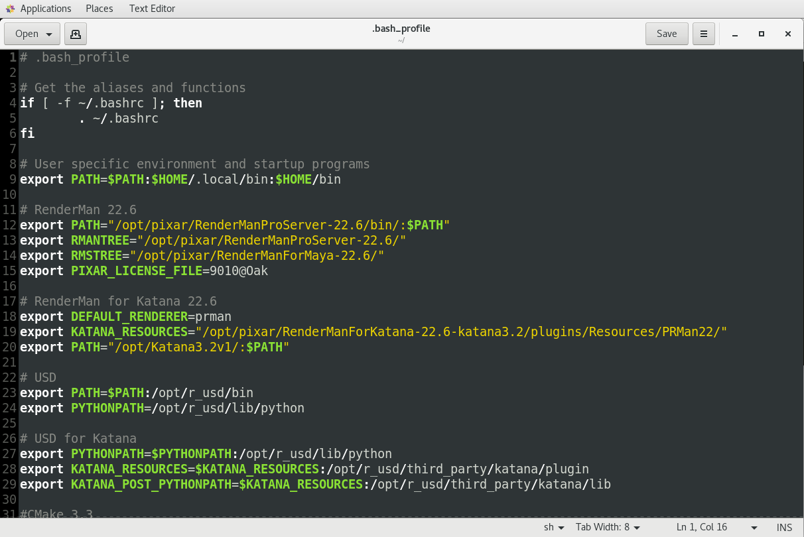
.bash_profile
# .bash_profile
# Get the aliases and functions
if [ -f ~/.bashrc ]; then
. ~/.bashrc
fi
# User specific environment and startup programs
export PATH=$PATH:$HOME/.local/bin:$HOME/bin
# RenderMan 22.6
# export PATH="/opt/pixar/RenderManProServer-22.6/bin/:$PATH"
export RMANTREE="/opt/pixar/RenderManProServer-22.6/"
export RMSTREE="/opt/pixar/RenderManForMaya-22.6/"
export PIXAR_LICENSE_FILE=9010@localhost
# RenderMan 22.6 for Katana 3.2
export DEFAULT_RENDERER=prman
export KATANA_RESOURCES="/opt/pixar/RenderManForKatana-22.6-katana3.2/plugins/Resources/PRMan22/"
export PATH="/opt/Katana3.2v1/:$PATH"
# USD
export PATH=$PATH:/opt/r_usd/bin
export PYTHONPATH=/opt/r_usd/lib/python
# USD for Katana
export PYTHONPATH=$PYTHONPATH:/opt/r_usd/lib/python
export KATANA_RESOURCES=$KATANA_RESOURCES:/opt/r_usd/third_party/katana/plugin
export KATANA_POST_PYTHONPATH=$KATANA_RESOURCES:/opt/r_usd/third_party/katana/lib
# Houdini 17.5.229
#cd /opt/hfs17.5
#source houdini_setup
#cd $HOME
If you are working in a multi-user environment you might want to consider switching over to a REZ based configuration, build, and deployment system.
And humorously, by random coincidence, REZ's official slogan is "Resolve it with rez" which seems in line with a WSL user's goal of eventually running OpenUSD inside of Resolve (and Fusion Standalone).
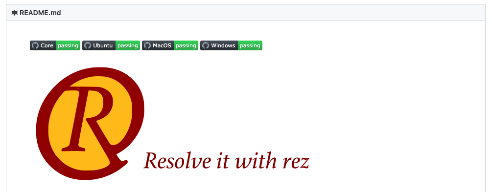
Step 10. Download the "Kitchen_set" example USD scene¶
Next, you need to download the PIXAR "Kitchen_set" example USD scene.
PIXAR USD > Assets > Download Kitchen Set
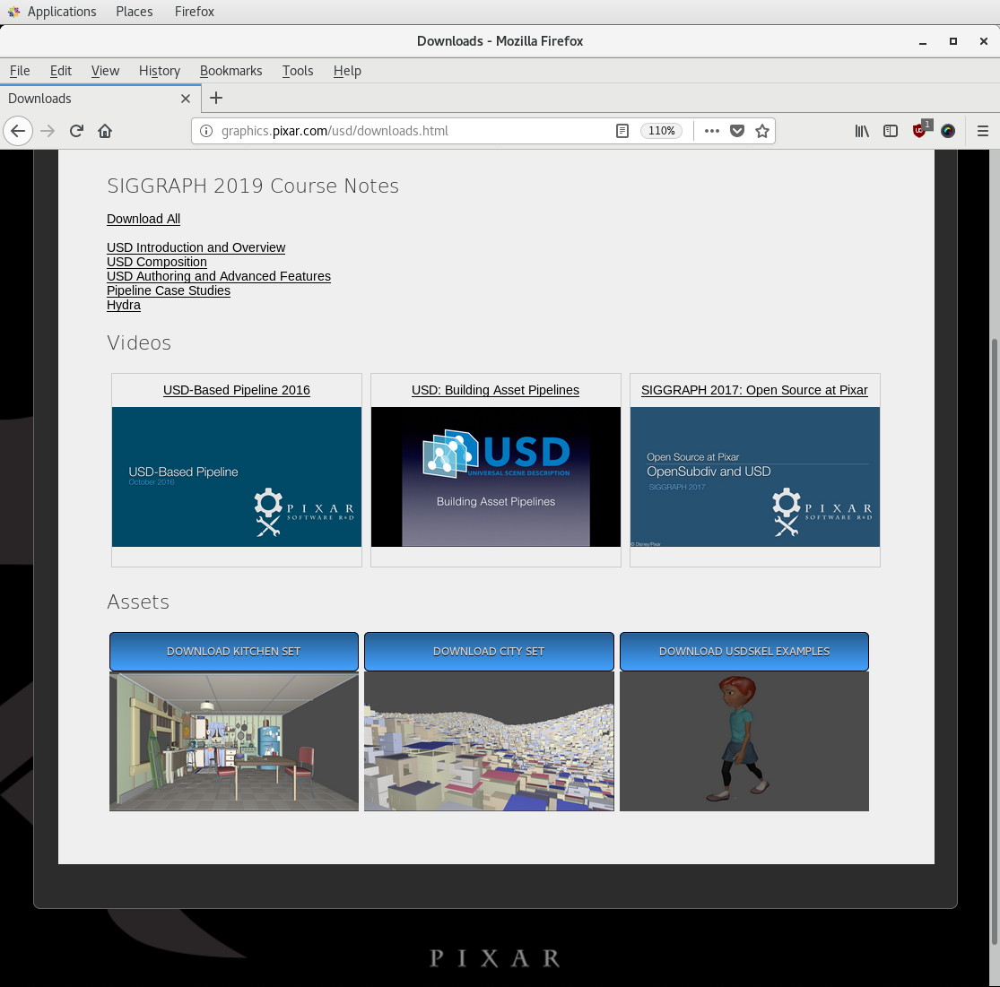
After you expand the ZIP archive for the Kitchen_set.zip" example, you can then browse the very efficiently nested hierarchy of USD composed models:
Exploring the Kitchen_set Example Assets
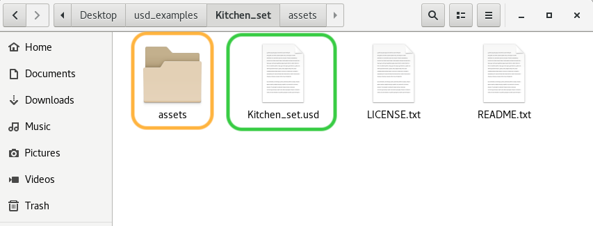
The USD scene is composed using the "Kitchen_set.usd" file.
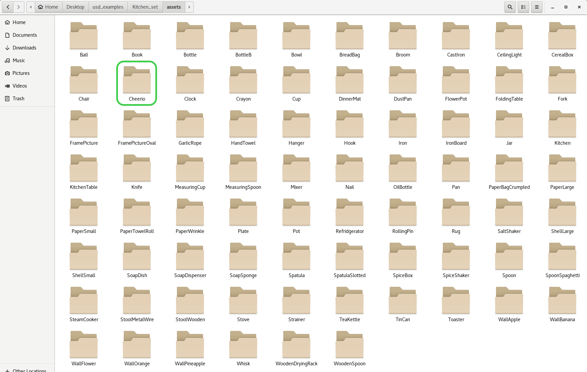
The "Kitchen_set.usd" file is a USDA (ASCII) file that can be viewed in a programmer's plain text editor. References to the placed OpenSubdiv based polygon model assets are visible in each of the "add references = @./assets/Blah/Blah.usd@" like sections in the USDA file.
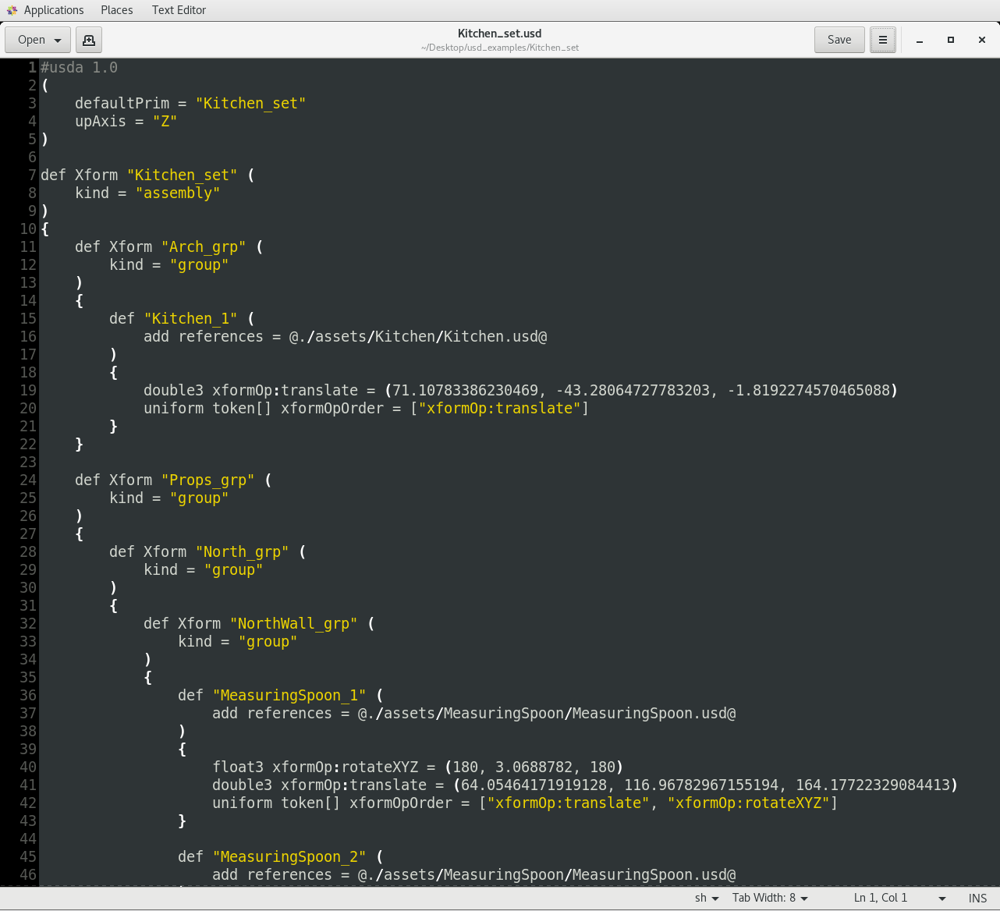
If you open up the "assets" folder, then open up the "Cheerio" folder you can inspect one of the OpenSubdiv based models in usdview to get an idea of the individual elements that are used in the scene.
The "Cheerio.usd" file is a USDA (ASCII) document that can be viewed in a programer's plain text editor. The "Cheerio.usd" file lists two model variants named "CheerioA" and "CheerioB". These variants are alternated between randomly when the bowl on the table in the full kitchen scene is filled via USD instancing of the cheerio model.
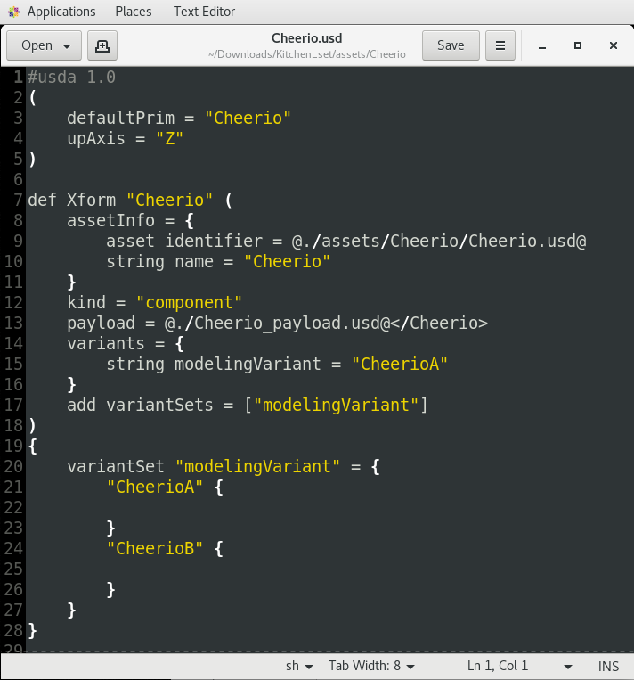
After the Cheerio model is loaded in "usdview", you can enable the "View > Shading Mode > WireframeOnShaded" menu item based rendering method to see a preview of the finished model. It helps if you also enable the OpenSubdiv based realtime mesh smoothing feature using the "View > Complexity > Very High" menu item, too.
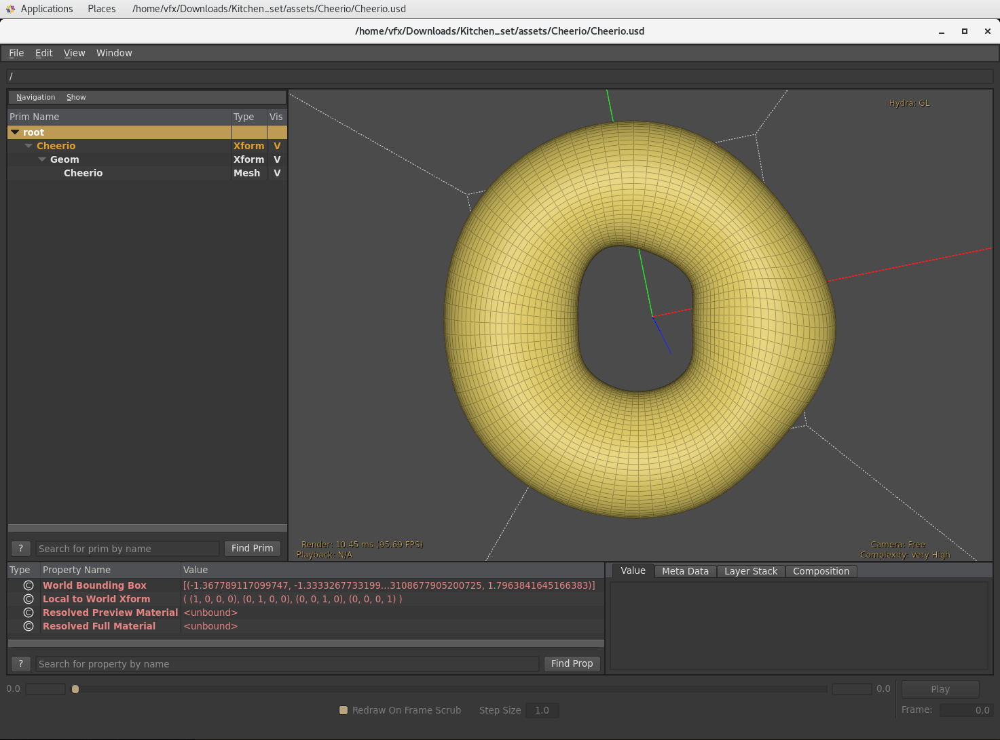
Finally, we can view the "Kitchen_set/Kitchen_set.usd" file in our freshly compiled copy of usdview:
KitchenSetInUSDView.bsh
usdview '$HOME/Downloads/Kitchen_set/Kitchen_set.usd'
This results in usdview launching and the OpenSubdiv based example scene being loaded:
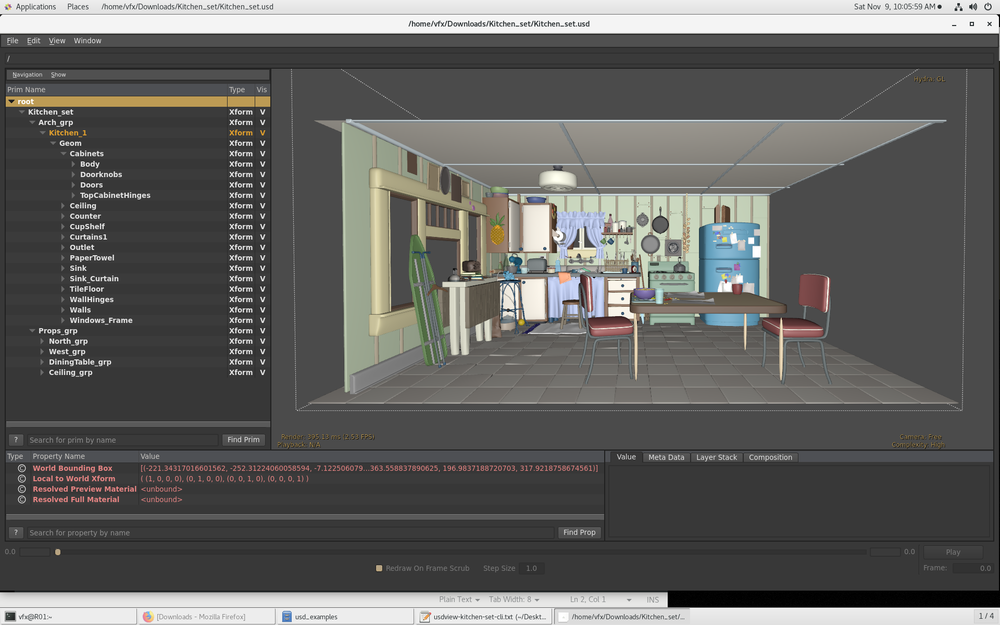
Step 11. Setup OpenUSD plugin in Maya.env¶
Setup the OpenUSD plugin in your Maya 2019 Maya.env file:
Maya.env
# Suppress Arnold not found error message
MAYA_NO_WARNING_FOR_MISSING_DEFAULT_RENDERER=1
# Set the CIP disable flag
MAYA_DISABLE_CIP=1
# USD for Maya
MAYA_PLUG_IN_PATH=$MAYA_PLUG_IN_PATH:/opt/r_usd/third_party/maya/plugin
XBMLANGPATH=$XBMLANGPATH/%B:/opt/r_usd/third_party/maya/lib/usd/usdMaya/resources/%B
MAYA_SCRIPT_PATH=$MAYA_SCRIPT_PATH:/opt/r_usd/third_party/maya/lib/usd/usdMaya/resources/:/opt/r_usd/third_party/maya/plugin/pxrUsdPreviewSurface/resources
PYTHONPATH=$PYTHONPATH:/opt/r_usd/lib/python
Step 12. Double-check Katana environment variables¶
Double-check your Katana environment variables to make sure they exist for your active session:
.profile
export PYTHONPATH=$PYTHONPATH:/opt/r_usd/lib/python
export KATANA_RESOURCES=$KATANA_RESOURCES:/opt/r_usd/third_party/katana/plugin
export KATANA_POST_PYTHONPATH=$KATANA_RESOURCES:/opt/r_usd/third_party/katana/lib
When you start using OpenUSD inside of RenderMan for Katana, you will typically interact with the PxrUsdIn node in the Katana Node graph as the primary way to load all models, textures, and lights.
Here are two screenshots that show Katana running with the PIXAR "Kitchen_set" example scene:
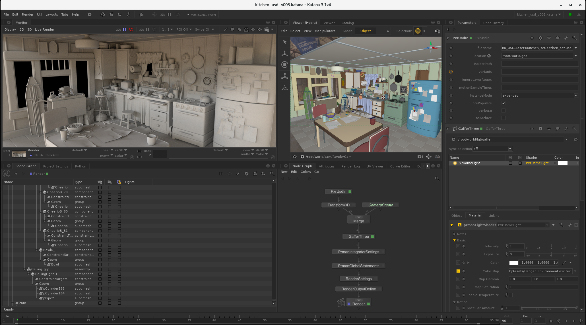
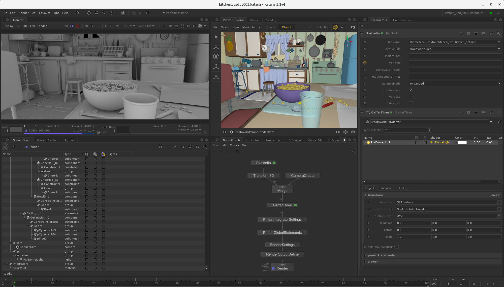
Step 13. Links for the main "extra" libraries¶
If you need them, here are the GitHub repo/webpage links for the main "extra" libraries you can compile when building your own full-featured PIXAR OpenUSD plugins.
OpenUSD¶
- https://graphics.pixar.com/usd/docs/index.html
- https://github.com/PixarAnimationStudios/USD
Houdini OpenUSD¶
Katana OpenUSD¶
- http://openusd.org/docs/Katana-USD-Plugins.html
- Local Resource:
/opt/Katana3.2v1/docs/dev_guide/
Maya DevKit¶
- http://openusd.org/docs/Maya-USD-Plugins.html
- Where is the Maya 2016 devkit
Note: Install the Maya devkit in the$HOMEfolder then set the two env vars "DEVKIT_LOCATION" and "MAYA_LOCATION".
OpenSubdiv¶
- https://github.com/PixarAnimationStudios/OpenSubdiv
PTEX¶
- https://github.com/wdas/ptex/
Alembic¶
- https://github.com/alembic/alembic
jemalloc¶
- https://github.com/jemalloc/jemalloc
Flex¶
- https://github.com/westes/flex
Bison¶
- https://www.gnu.org/software/bison/
Jinja2¶
- http://jinja.pocoo.org/docs/dev/
Argparse¶
- https://docs.python.org/3/library/argparse.html
Find RPMs¶
- https://pkgs.org/
- https://www.rpmfind.net/linux/RPM/index.html
Step 14. CMake examples to build the common libraries¶
Here are cmake CLI (command-line) BASH examples that can be used to build the common libraries you might add to OpenUSD:
Pixar OpenSubdiv¶
OpenSubdiv.bsh
# OpenSubdiv
mkdir -p $HOME/OpenSubdiv/build
cd $HOME/
git clone https://github.com/PixarAnimationStudios/OpenSubdiv
cd $HOME/OpenSubdiv/build
cmake -D NO_PTEX=1 -D NO_DOC=1 \
-D NO_OMP=1 -D NO_TBB=1 -D NO_CUDA=1 -D NO_OPENCL=1 -D NO_CLEW=1 \
-D GLEW_LOCATION="/usr/include/GL" \
-D GLFW_LOCATION="/usr/include/GLFW" \
..
sudo cmake --build . --target install -- -j 63
Walt Disney Animation Studios PTEX¶
PTEX.bsh
#PTEX
git clone https://github.com/wdas/ptex/
cd $HOME/ptex
# ...
# ...
# ...
Note: If you don't have X11 installed you will likely get errors from: Q_WS_X11 LibXml2 LibXslt
Intel Embree¶
Embree.bsh
# Embree
cd $HOME
wget https://github.com/embree/embree/releases/download/v3.5.2/embree-3.5.2.x86_64.rpm.tar.gz
tar xzf embree-3.5.2.x86_64.rpm.tar.gz
sudo rpm --install embree3-*.rpm
Step 15. Flags for the build_usd.py based compile¶
It's a good idea to have a clear idea of the available flags you can specify in the CLI (command-line) when running the PIXAR OpenUSD build_usd.py compiling process on your own.
Code: [Select all][Expand/Collapse][Download] (build_usd.bsh)
vfx@R01 build_scripts]$ python build_usd.py
usage: build_usd.py [-h]
[-n]
[-v | -q]
[-j JOBS]
[--build BUILD]
[--build-args [BUILD_ARGS [BUILD_ARGS ...]]]
[--force FORCE_BUILD]
[--force-all]
[--generator GENERATOR]
[--src SRC]
[--inst INST]
[--build-shared | --build-monolithic] [--debug]
[--tests | --no-tests]
[--docs | --no-docs]
[--python | --no-python]
[--imaging | --usd-imaging | --no-imaging]
[--ptex | --no-ptex]
[--usdview | --no-usdview]
[--embree | --no-embree]
[--embree-location EMBREE_LOCATION]
[--openimageio | --no-openimageio]
[--opencolorio | --no-opencolorio]
[--alembic | --no-alembic]
[--hdf5 | --no-hdf5]
[--materialx | --no-materialx]
[--maya | --no-maya]
[--maya-location MAYA_LOCATION]
[--katana | --no-katana]
[--katana-api-location KATANA_API_LOCATION]
[--houdini | --no-houdini]
[--houdini-location HOUDINI_LOCATION]
install_dir
Step 16. Build process terminal output¶
After the build_usd.py script has been used to create usdview and the 3rd party OpenUSD plugins are compiled successfully, you will see output like this in the terminal:
BuildResults.bsh*
vfx@R01 build_scripts]$ python build_usd.py /opt/r_usd/
Building with settings:
USD source directory /home/vfx/USD
USD install directory /opt/r_usd/
3rd-party source directory /opt/r_usd/src
3rd-party install directory /opt/r_usd/USD
Build directory /opt/r_usd/build
CMake generator Default
Downloader curl
Building Shared libraries
Config Release
Imaging On
Ptex support: Off
OpenImageIO support: Off
OpenColorIO support: Off
UsdImaging On
usdview: On
Python support On
Documentation Off
Tests Off
Alembic Plugin Off
HDF5 support: Off
MaterialX Plugin Off
Maya Plugin Off
Katana Plugin Off
Houdini Plugin Off
Dependencies boost, TBB, OpenEXR, GLEW, OpenSubdiv
STATUS: Installing boost...
STATUS: Installing TBB...
STATUS: Installing OpenEXR...
STATUS: Installing GLEW...
STATUS: Installing OpenSubdiv...
STATUS: Installing USD...
Success! To use USD, please ensure that you have:
The following in your PYTHONPATH environment variable:
/opt/r_usd/lib/python
The following in your PATH environment variable:
/opt/r_usd/bin
Step 17. USD tools you can run from the CLI¶
With OpenUSD installed on your system the /opt/r_usd/USD/bin/ folder will have the following USD tools you can run from the CLI (command-line):
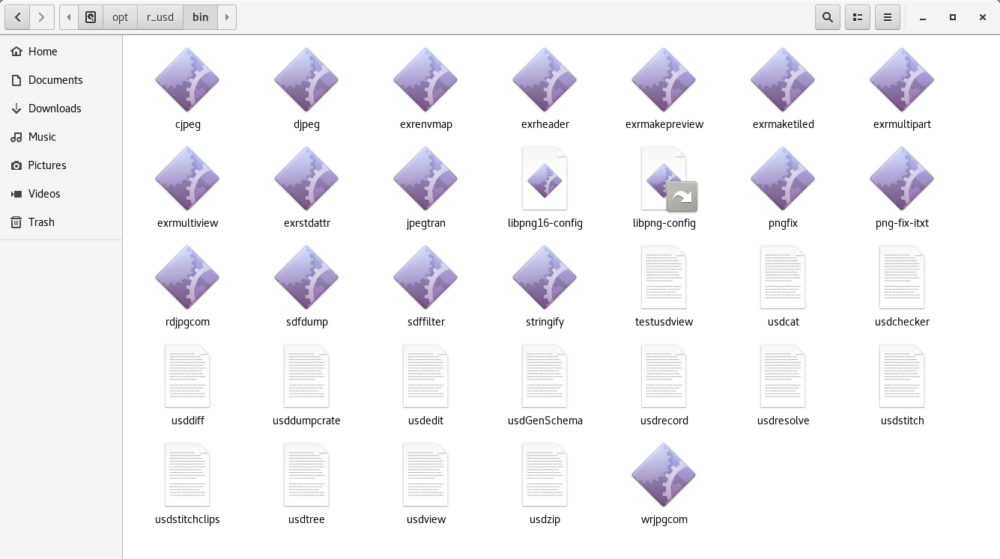
- cjpeg
- djpeg
- exrenvmap
- exrheader
- exrmakepreview
- exrmaketiled
- exrmultipart
- exrmultiview
- exrstdattr
- jpegtran
- libpng16-config
- libpng-config
- pngfix
- png-fix-itxt
- rdjpgcom
- sdfdump
- sdffilter
- stringify
- testusdview
- usdcat
- usdchecker
- usddiff
- usddumpcrate
- usdedit
- usdGenSchema
- usdresolve
- usdstitch
- usdstitchclips
- usdtree
- usdview
- usdzip
- wrjpgcom
You will also have the following Alembic tools you can use from the CLI (command-line), too:
- abcconvert
- abcdiff
- abcecho
- abcechobounds
- abcls
- abcstitcher
- Abctree
Stay tuned for part 2. More to follow.
Part 2 - Houdini 18¶
Houdini v18 Released
Houdini v18 shipped today with support for Windows/Linux/macOS systems. Now anyone can download Houdini Apprentice for free from SideFX and try out the Solaris integration.
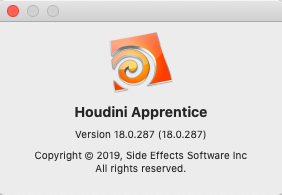
Screenshots¶
Here's a quick screenshot of the PIXAR "Kitchen_set.usd" scene loaded up using a stock Houdini "File" node from inside a Geo node.
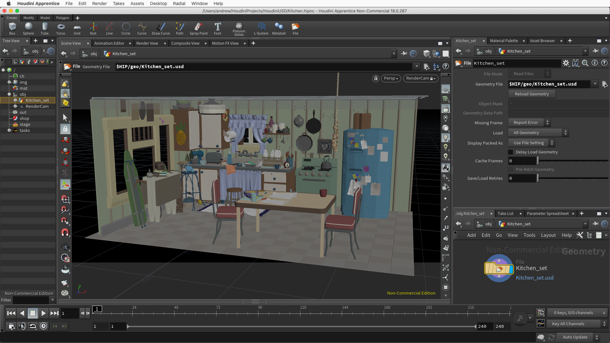
And here's a quick view of the Houdini Solaris "Stage" environment:
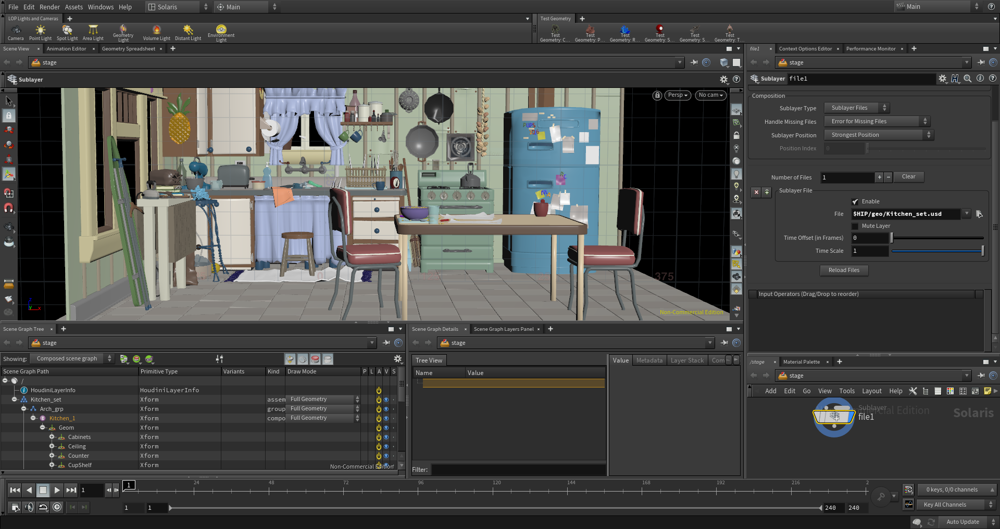
Houdini Bundled USD CLI Tools¶
Houdini 18 ships with Hython compiled CLI (command-line) copies of the following core USD tools:
- usdcat
- usddiff
- usdedit
- usdresolve
- usdstitchclips
- usdview
- usdchecker
- usddumpcrate
- usdrecord
- usdstitch
- usdtree
- usdzip
On a macOS system running Houdini v18.0.287 these USD CLI tools are located in the folder:
/Applications/Houdini/Houdini18.0.287/Frameworks/Houdini.framework/Versions/Current/Resources/bin/
On a Windows 10 system running Houdini v18.0.287 these USD CLI tools are located in the folder:
C:\Program Files\Side Effects Software\Houdini 18.0.287\bin\
On a CentOS 7.x system running Houdini v18.0.287 these USD CLI tools are located in the folder:
/opt/hfs18.0.287/bin/
You can source Houdini on Linux's environment variables using:
cd /opt/hfs18.0.287/
source houdini_setup
You can source Houdini on macOS's environment variables using:
cd /Applications/Houdini/Houdini18.0.287/Frameworks/Houdini.framework/Versions/Current/Resources
source houdini_setup
Running Houdini's Provided Copy of USDVIEW¶
Houdini v18 provides a usdview.bat launching script on Windows 10 in the Houdini "bin" folder. Inside the bat file the script runs the code:
hython %HFS%/bin/usdview %*
If you haven't loaded Houdini 18's bin folder into your %PATH% environment variable, from a fresh Command Prompt session you could launch usdview using:
"C:\Program Files\Side Effects Software\Houdini 18.0.287\bin\hython2.7.exe" "C:\Program Files\Side Effects Software\Houdini 18.0.287\bin\usdview" Kitchen_set.usd
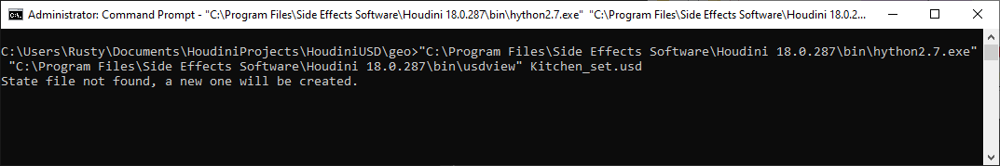
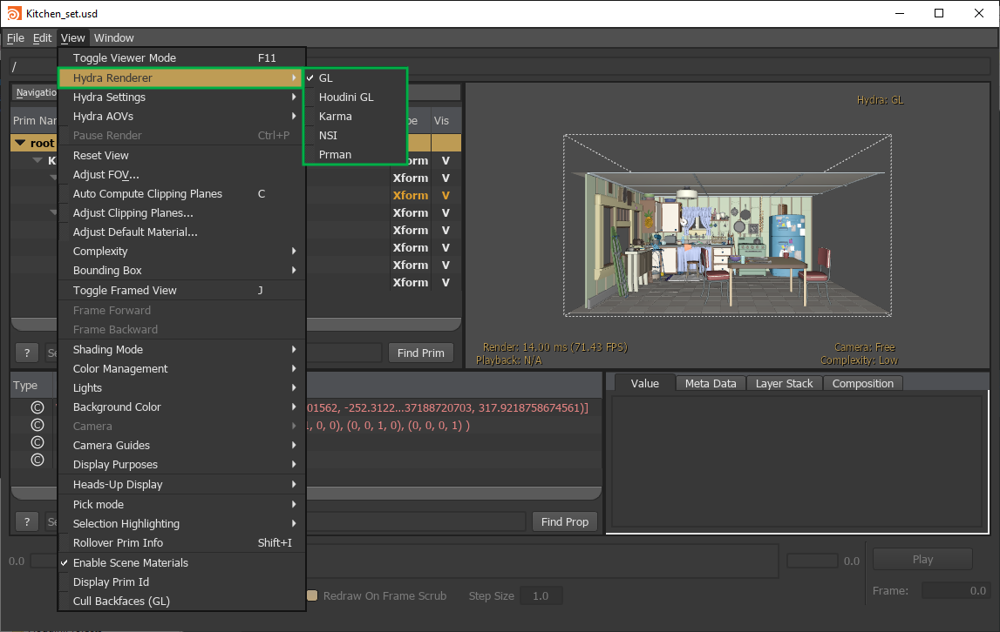
Part 3 - Fusion Studio¶
The KartaVR "Export Point Cloud" script now supports Fusion PointCloud3D node data export to XYZ ASCII (.xyz), PLY ASCII (.ply), Maya ASCII (.ma), and PIXAR USDA ASCII (.usda) formats from Fusion.
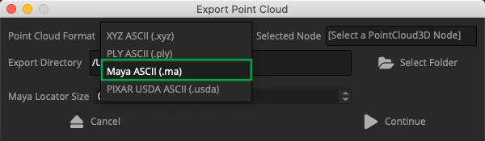
Translating Fusion 3D System Nodes into the USD ASCII Format¶
The current version of the "Export Point Cloud" script that is in Reactor's "KartaVR/Scripts" category in the "KartaVR Scripts | Virtual Production" atom package can now do PointCloud3D node based exports to a lot of formats, and also a whole lot more, too.
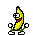
I'm excited about building out a more complete set of KartaVR based camera/point cloud/volumetric video/mesh sequence tools to help production artists start to embracing what PIXAR's USD technology can do for allowing seamless data interchange of both 3D scene graph information and volumetric assets.
As a side bonus some of these tool creation efforts, things like the "Export Point Cloud" script might just become an essential addon for Fusion compositors that want to take on matchmoving, point cloud workflows, or push their matte painting and texture projection workflows further.
The most recent thing I've been exploring is how to support animated USD ASCII exporting of Fusion Camera3D node based cameras from the Fusion 3D system into a .usda file export.
Here's a sample output from the "Export Point Cloud" script that is saves out a animated Camera3D node as USD formatted data using the timeSamples option to store per-frame keyframe data on the rotateXYZ and translate elements in the USDA file:
Camera3D.usda¶
#usda 1.0
(
defaultPrim = "AnimatedCamera3D"
doc = """Generated from Composed Stage of root layer /Users/andrew/Downloads/FusionAnimatedCamera/AnimatedCamera.comp"""
metersPerUnit = 0.01
upAxis = "Y"
)
def Xform "AnimatedCamera3D" (
kind = "assembly"
)
{
float3 xformOp:rotateXYZ.timeSamples = {
0: (-37, -16.200000762939, 0),
1: (-36.618713450292, -16.415570938378, 0),
2: (-36.237426900585, -16.631141113817, 0),
3: (-35.856140350877, -16.846711289255, 0),
4: (-35.47485380117, -17.062281464694, 0),
5: (-35.093567251462, -17.277851640132, 0),
6: (-34.712280701754, -17.493421815571, 0),
7: (-34.330994152047, -17.70899199101, 0),
8: (-33.949707602339, -17.924562166448, 0),
9: (-33.568421052632, -18.140132341887, 0),
10: (-33.187134502924, -18.355702517325, 0),
11: (-32.805847953216, -18.571272692764, 0),
12: (-32.424561403509, -18.786842868203, 0),
13: (-32.043274853801, -19.002413043641, 0),
14: (-31.661988304094, -19.21798321908, 0),
15: (-31.280701754386, -19.433553394518, 0),
16: (-30.899415204678, -19.649123569957, 0),
17: (-30.518128654971, -19.864693745396, 0),
18: (-30.136842105263, -20.080263920834, 0),
19: (-29.755555555556, -20.295834096273, 0),
20: (-29.374269005848, -20.511404271711, 0),
21: (-28.99298245614, -20.72697444715, 0),
22: (-28.611695906433, -20.942544622589, 0),
23: (-28.230409356725, -21.158114798027, 0),
24: (-27.849122807018, -21.373684973466, 0),
25: (-27.46783625731, -21.589255148904, 0),
26: (-27.086549707602, -21.804825324343, 0),
27: (-26.705263157895, -22.020395499782, 0),
28: (-26.323976608187, -22.23596567522, 0),
29: (-25.94269005848, -22.451535850659, 0),
30: (-25.561403508772, -22.667106026097, 0),
31: (-25.180116959064, -22.882676201536, 0),
32: (-24.798830409357, -23.098246376975, 0),
33: (-24.417543859649, -23.313816552413, 0),
34: (-24.036257309942, -23.529386727852, 0),
35: (-23.654970760234, -23.74495690329, 0),
36: (-23.273684210526, -23.960527078729, 0),
37: (-22.892397660819, -24.176097254168, 0),
38: (-22.511111111111, -24.391667429606, 0),
39: (-22.129824561404, -24.607237605045, 0),
40: (-21.748538011696, -24.822807780483, 0),
41: (-21.367251461988, -25.038377955922, 0),
42: (-20.985964912281, -25.253948131361, 0),
43: (-20.604678362573, -25.469518306799, 0),
44: (-20.223391812866, -25.685088482238, 0),
45: (-19.842105263158, -25.900658657676, 0),
46: (-19.46081871345, -26.116228833115, 0),
47: (-19.079532163743, -26.331799008554, 0),
48: (-18.698245614035, -26.547369183992, 0),
49: (-18.316959064328, -26.762939359431, 0),
50: (-17.93567251462, -26.978509534869, 0),
51: (-17.554385964912, -27.194079710308, 0),
52: (-17.173099415205, -27.409649885747, 0),
53: (-16.791812865497, -27.625220061185, 0),
54: (-16.41052631579, -27.840790236624, 0),
55: (-16.029239766082, -28.056360412062, 0),
56: (-15.647953216374, -28.271930587501, 0),
57: (-15.266666666667, -28.48750076294, 0),
58: (-15.261757105943, -27.989408675262, 0),
59: (-15.25684754522, -27.491316587585, 0),
60: (-15.251937984496, -26.993224499908, 0),
61: (-15.247028423773, -26.495132412231, 0),
62: (-15.242118863049, -25.997040324554, 0),
63: (-15.237209302326, -25.498948236877, 0),
64: (-15.232299741602, -25.0008561492, 0),
65: (-15.227390180879, -24.502764061523, 0),
66: (-15.222480620155, -24.004671973846, 0),
67: (-15.217571059432, -23.506579886169, 0),
68: (-15.212661498708, -23.008487798491, 0),
69: (-15.207751937985, -22.510395710814, 0),
70: (-15.202842377261, -22.012303623137, 0),
71: (-15.197932816537, -21.51421153546, 0),
72: (-15.193023255814, -21.016119447783, 0),
73: (-15.18811369509, -20.518027360106, 0),
74: (-15.183204134367, -20.019935272429, 0),
75: (-15.178294573643, -19.521843184752, 0),
76: (-15.17338501292, -19.023751097075, 0),
77: (-15.168475452196, -18.525659009398, 0),
78: (-15.163565891473, -18.027566921721, 0),
79: (-15.158656330749, -17.529474834043, 0),
80: (-15.153746770026, -17.031382746366, 0),
81: (-15.148837209302, -16.533290658689, 0),
82: (-15.143927648579, -16.035198571012, 0),
83: (-15.139018087855, -15.537106483335, 0),
84: (-15.134108527132, -15.039014395658, 0),
85: (-15.129198966408, -14.540922307981, 0),
86: (-15.124289405685, -14.042830220304, 0),
87: (-15.119379844961, -13.544738132627, 0),
88: (-15.114470284238, -13.04664604495, 0),
89: (-15.109560723514, -12.548553957273, 0),
90: (-15.104651162791, -12.050461869595, 0),
91: (-15.099741602067, -11.552369781918, 0),
92: (-15.094832041344, -11.054277694241, 0),
93: (-15.08992248062, -10.556185606564, 0),
94: (-15.085012919897, -10.058093518887, 0),
95: (-15.080103359173, -9.56000143121, 0),
96: (-15.07519379845, -9.0619093435329, 0),
97: (-15.070284237726, -8.5638172558558, 0),
98: (-15.065374677003, -8.0657251681787, 0),
99: (-15.060465116279, -7.5676330805016, 0),
100: (-15.055555555556, -7.0695409928245, 0),
101: (-15.050645994832, -6.5714489051475, 0),
102: (-15.045736434109, -6.0733568174704, 0),
103: (-15.040826873385, -5.5752647297933, 0),
104: (-15.035917312661, -5.0771726421162, 0),
105: (-15.031007751938, -4.5790805544391, 0),
106: (-15.026098191214, -4.080988466762, 0),
107: (-15.021188630491, -3.5828963790849, 0),
108: (-15.016279069767, -3.0848042914078, 0),
109: (-15.011369509044, -2.5867122037307, 0),
110: (-15.00645994832, -2.0886201160536, 0),
111: (-15.001550387597, -1.5905280283765, 0),
112: (-14.996640826873, -1.0924359406994, 0),
113: (-14.99
Cut off file!?!
Seems that (maybe due to all the document imports and exports) the file Camera3D.usda got cut off at the end!?!
The script has the ability to translate AlembicMesh3D node-based elements from your Fusion comp into Maya ASCII (.ma) "Reference Editor" based alembic references, and USDA formatted Xform assembly references which instance externally stored Alembic meshes in the USD scene:
AlembicMesh3D.usda¶
#usda 1.0
(
defaultPrim = "SoccerAlembicMesh3D"
doc = """Generated from Composed Stage of root layer /Users/andrew/Downloads/FusionAnimatedCamera/AnimatedCamera.comp"""
metersPerUnit = 0.01
upAxis = "Y"
)
def Xform "SoccerAlembicMesh3D" (
kind = "assembly"
)
{
def Xform "SoccerAlembicMesh3DReferenceAssembly" (
kind = "assembly"
prepend references = @/Users/andrew/Downloads/FusionAnimatedCamera/Media/soccer_HDF5.abc@
)
{
float3 xformOp:rotateXYZ = (0, 0, 0)
double3 xformOp:translate = (0, 0, 0)
uniform token[] xformOpOrder = ["xformOp:translate", "xformOp:rotateXYZ"]
}
}
Example Fusion Comp Project¶
Here's a small Fusion example project you can use to explore the new PIXAR USD ASCII and Maya ASCII output options that are in the Reactor delivered "Export Point Cloud" script:
AnimatedCamera.comp
Fusion Export Stage¶
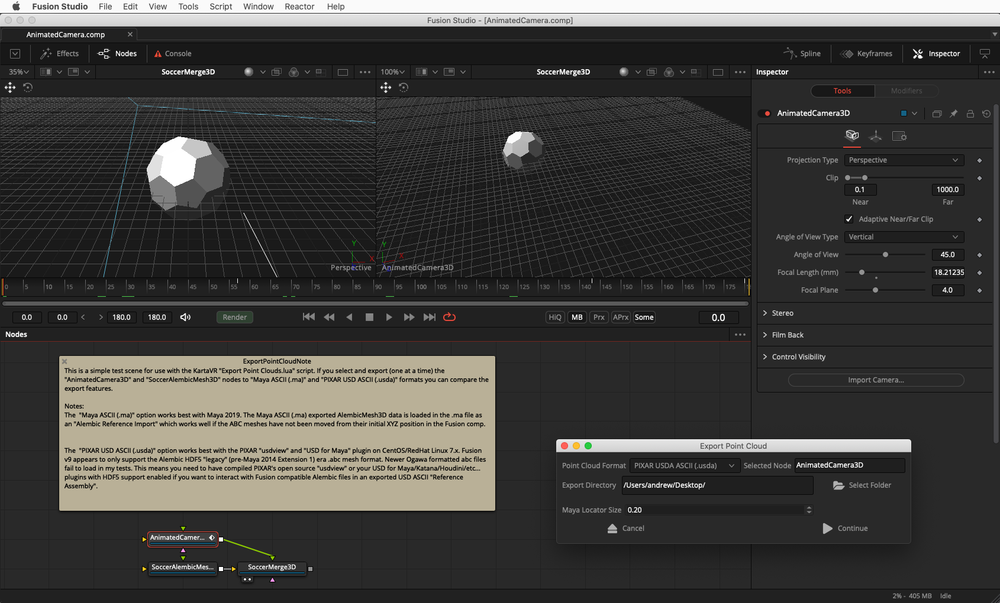
Maya Import Stage¶
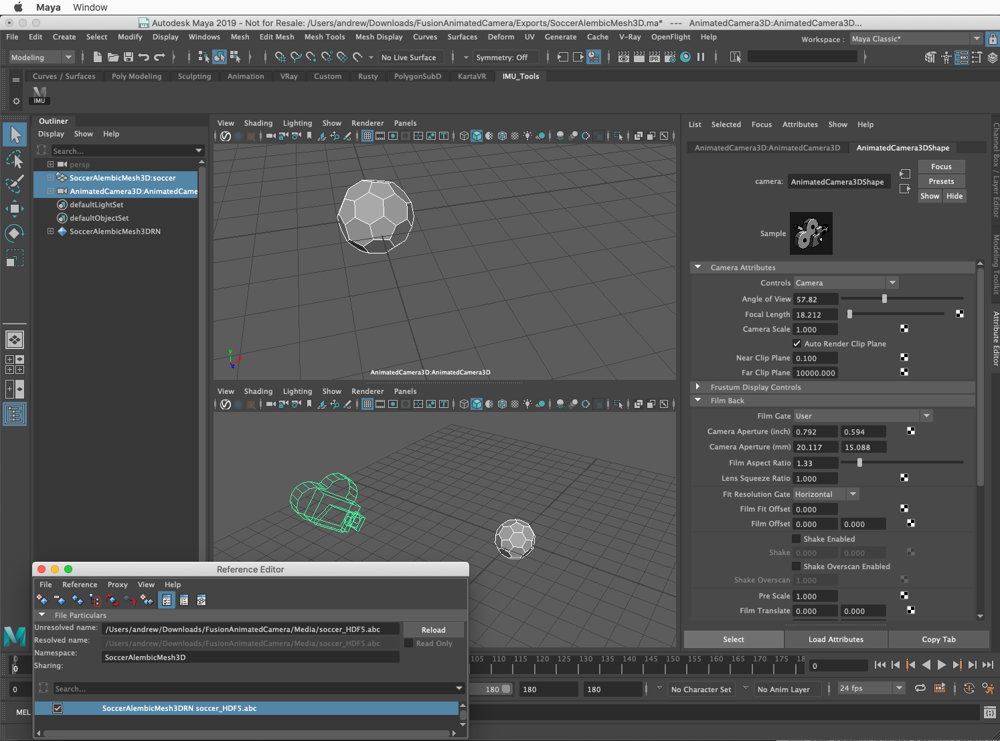
Part 4 - CompX¶
I'm working on a slightly expanded scope for an OpenUSD integration effort for the Fusion Studio/Resolve Studio's Fusion page... It's a bit like going down a rabbit hole but the end result could help to radically improve data interchange of compositing node graphs for things like USD shots publishes that could be delivered to artists with an accompanying slap comp attached.
GitHub | CompX
https://github.com/AndrewHazelden/CompX
An OpenUSD schema for representing nodal compositing operators. Optimized for VFX and virtual production workflows. The goal is to create an OpenUSD based CompX schema, alongside a reference implementation that ships with the essential DCC plugins, command-line utilities, and libraries to support compositing data interchange.
An OpenUSD schema for representing nodal compositing operators. Optimized for VFX and virtual production workflows.
Project Status:¶
A new working group of VFX/animation/post-production/virtual production/game industry professionals is being assembled.
The goal is to create an OpenUSD based CompX schema, alongside a reference implementation that ships with the essential DCC plugins, command-line utilities, and libraries to support compositing data interchange.
Two (legacy) OpenUSD ASCII exporter scripts were added to the CompX repository recently to help with R&D tests as ongoing research is done during 2022 to move CompX from an idea, into a production-usable toolset.
Open Source License:
- Apache 2.0 License
OpenUSD Reference Information:
- OpenUSD Glossary | API Schema
- OpenUSD | Generating New Schema Classes